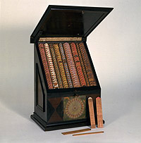

Athanasius Kircher(1602-1680) war ein deutscher Jesuit, Universalgelehrter und Erfinder. Er veröffentlichte ausführliche Monographien über Ägyptologie, Geologie, Medizin, Mathematik und Musiktheorie. Im Jahr 1661 sandte er an den Erzieher von Erzherzog Karl Joseph von Habsburg eine "Lernmaschine" für den Mathematikunterricht. Kircher hatte sich diese Mathematische Orgel (organum mathematicum) ausgedacht, in der auf beschrifteten Holztäfelchen in 10 Fächern 9 Bereiche der Mathematik angesprochen wurden: Arithmetik / Geometrie / Festungsbau / Kirchl. Zeitrechnung / Sonnenuhren / Astronomie / Astrologie / Geheimschriften(in zwei Fächern) / Musik. Zu den einzelnen Themen hatte Kircher Anleitungen in kleine Bücher geschrieben, die sich in einem Fach im Sockel befanden. Zu seinen Erfindungen gehören auch ein Vorläufer der Laterna Magica und eine Maschine, die Musik komponierte, "Arca Musarithmica".